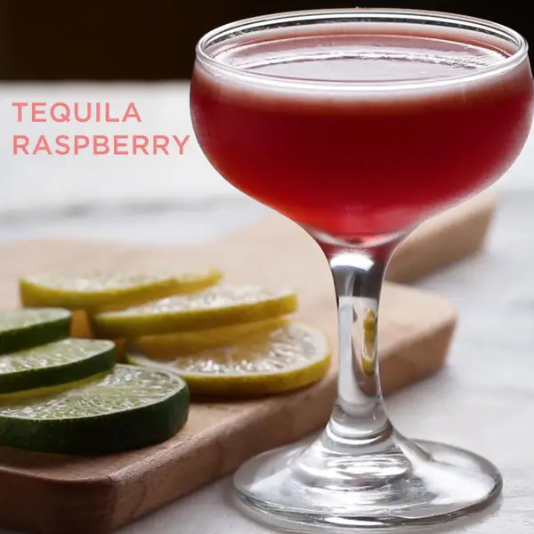

Tequila Raspberry

This is a sweet fun looking drink that is easy to make.
Ingredients
- ½ cup ice
- 1 tablespoon raspberry jam
- 2 tablespoons lime juice
- 2 fl oz tequila
- lime round, for garnish
Steps
- In a cocktail shaker, combine the ice, raspberry jam, lime juice, and tequila.
- Cover with the lid and shake vigorously for 30 seconds.
- Strain into desired serving glass.
- Garnish with a lime round.
- Enjoy!
OG Recipe